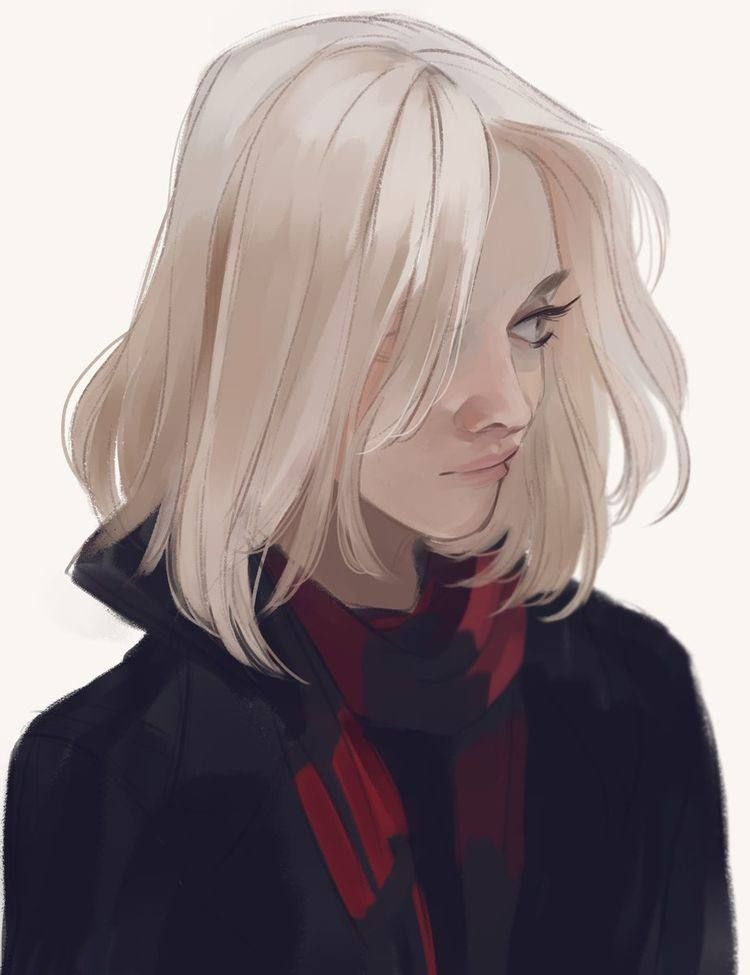
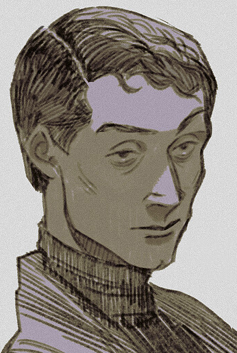

Ismini ZervotiL’idiot se cache derrière la morale pour masquer sa terreur du monde. Vouloir comprendre, et vouloir créer, voilà une marque de courage et d’amour.
Information connue
Prodige est un mot utilisé à tort et à travers. Pourtant, dans la Pyramide d’Izmir, c’est souvent le qualificatif utilisé pour Ismini Zervoti, première infante de Dimitrios et première des Tremere étreints à Izmir.
Histoire
Née en Crète en 1916, la jeune femme a très tôt démontré une grande intelligence et une curiosité effrayant ses pairs. En 1931, elle s’enfuit du foyer familial, et après des années d’errance, elle finit à Izmir en 1940.
C’est en pleine Chasse d’Artémis qu’Ismini est faite Goule par Dimitrios, une position dangereuse à l’époque face aux Assassins d’Haqim. Pourtant, elle survit aux sept années suivantes, contribuant en assistant son Domitor.
Relations
Lignée
-

Dimitrios Levantis - Chaque fois qu’il paraît en public, Dimitrios trouve une occasion de parler de son infante, non sans une certaine fierté. Il ne sort quasiment jamais, mais cela reste notable.
Trivia
- Elle a participé au cadeau du clan tremere à Camil
- En échange, Camil lui a tricoté une écharpe